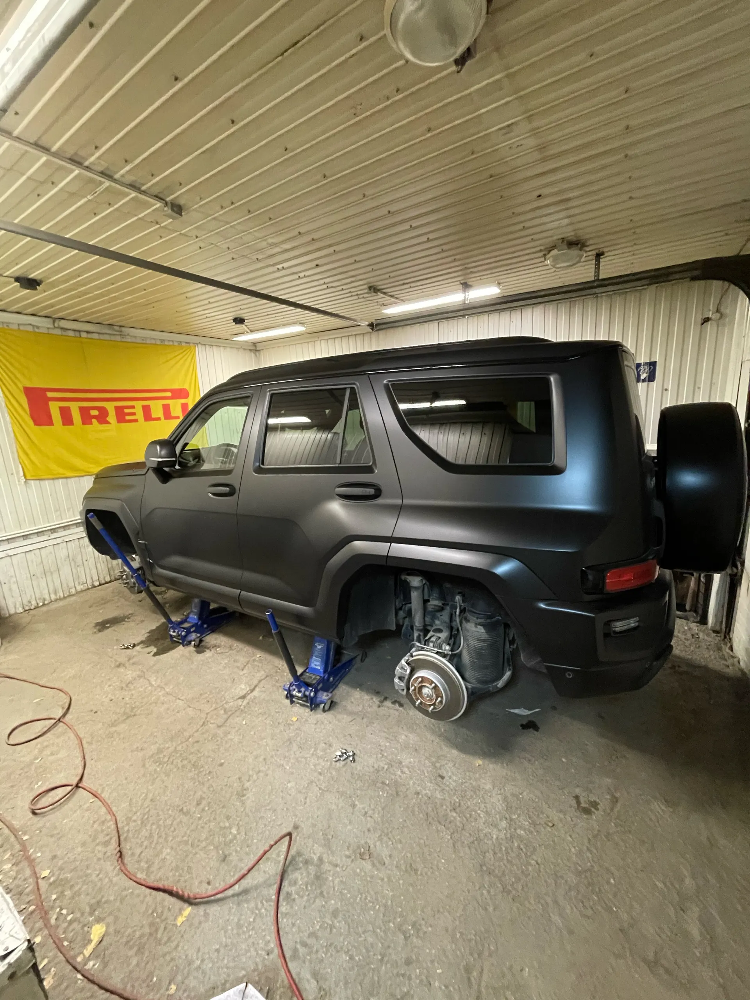
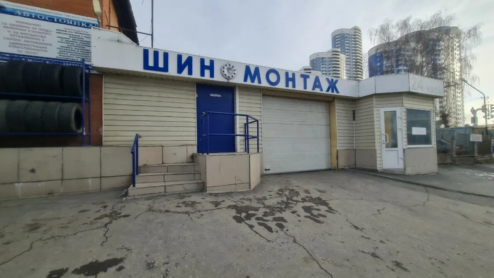
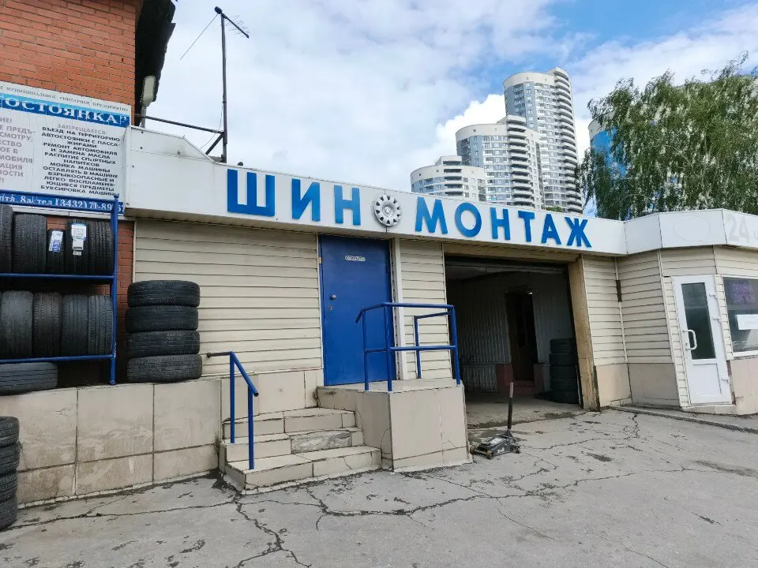
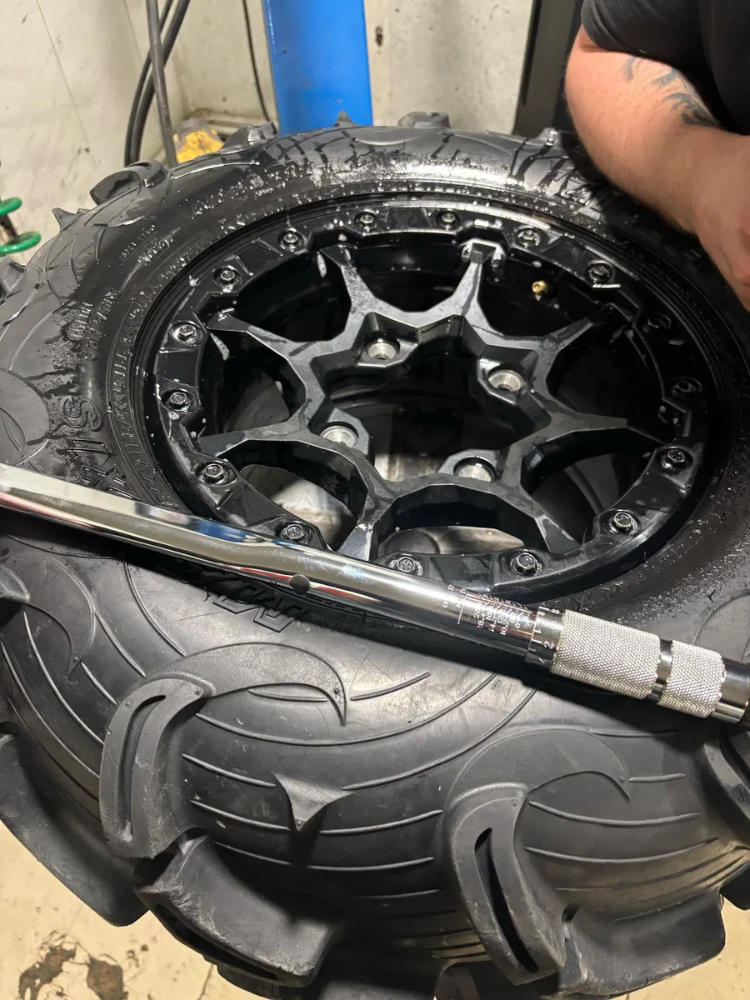

Шиномонтаж, балансировка, хранение шин
Шиномонтаж в Екатеринбурге – берёмся, когда другие отказывают
Репина, 75А. Переобувка, балансировка, вулканизация, хранение шин. Запись по телефону.
- Ежедневно 09:00–23:00, без выходных
- Выездной шиномонтаж и хранение шин
- 4,8 на Яндекс Картах, 69 отзывов

Услуги и цены
Раздела с ценами на карточке в Яндекс Картах нет, указано только «переобуть все колёса – от 2000 ₽». Цену на ваш радиус и тип колёс назовут по телефону.
Шины
- Переобувка всех колёсуточнить
- Балансировкауточнить
- Вулканизацияуточнить
- Утилизация шинуточнить
Диски и сервис
- Прокатка дисковуточнить
- Хранение шинуточнить
- Выездной шиномонтажуточнить
Как приехать
- 01
Позвоните
+7 (922) 219-49-19. Запись по телефону: клиенты пишут, что звонят заранее и приезжают к удобному времени.
- 02
Приезжайте на Репина, 75А
Ищите вывеску «ШИНОМОНТАЖ» над гаражными воротами. Ближайшая остановка – «Улица Репина», 113 м.
- 03
Оставьте колёса на хранение
На карточке указано хранение шин. Условия и цену уточняйте по телефону.



Что у нас есть
Работаем до 23:00, без выходных
По карточке на Яндекс Картах: ежедневно 09:00–23:00. Клиент пишет про воскресенье, 9 вечера: объехал три шиномонтажа, и только здесь сразу всё сделали.
Берутся за то, от чего отказывают другие
Клиент пишет, что в четырёх мастерских ему отказали в ремонте колеса, а здесь сделали. Другая клиентка – про прикипевшие колёса, с которыми отказывали в других местах.
Выездной шиномонтаж и хранение шин
Обе услуги есть в особенностях карточки. Условия и выезд – по телефону.
Ожидание – 97 % положительных оценок
По 36 отзывам о времени ожидания на Яндекс Картах.
Отзывы с Яндекс.Карт
«Несколько лет переобуваю машину только здесь. Все чётко, аккуратно. Заранее звоню, записываюсь на удобное время. Очень вежливые мастера»
Ксения Н · 13 мая 2026
«Прокололи шину, ездили по городу с гвоздем. Воскресенье, 9 вечера. Объехали 3 шинки и только в этой нам сразу все сделали буквально за 5 минут. Спасибо парням»
igor_ilin_18 · 12 октября 2024
«Минусов нет. Мастер подробно объяснил причины медленного снижения давления в шинах и устранил все неполадки.»
Владимир Горбунов · 16 сентября 2024
Отзывы с карточки на Яндекс.Картах, без правок.
Приезжайте на Репина, 75А
- Адрес
- ул. Репина, 75А, Екатеринбург
- Часы
- Ежедневно 09:00–23:00, без выходных
- Телефон
- +7 (922) 219-49-19